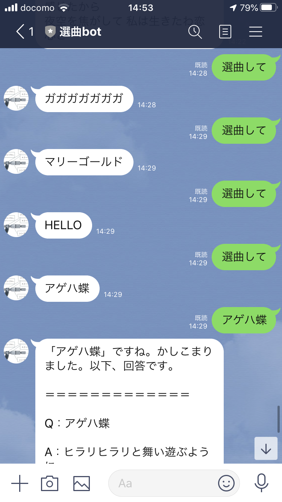
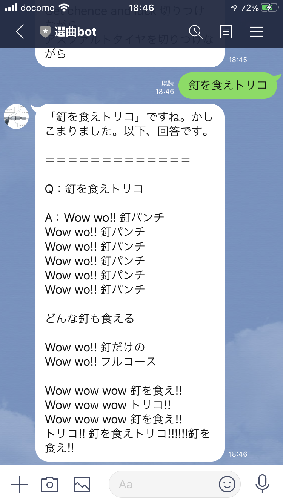
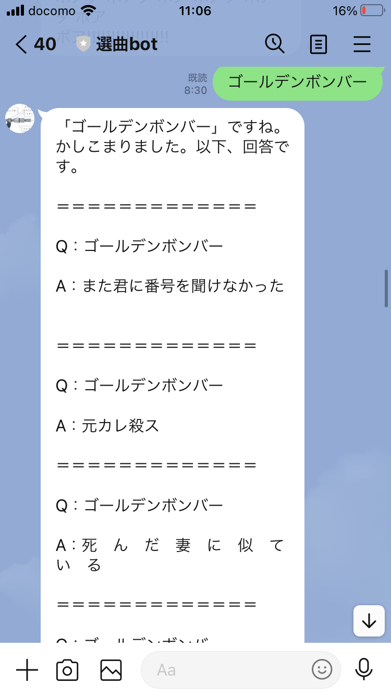

概要
去年作ったlinebotのお話をしようと思います。友達追加はこちら
  
画像のように"選曲して"とメッセージを送るとランダムに曲名を返信してくれます。
また、曲名を送るとその歌詞を表示してくれます。
アーティストの名前を送ると、データベースに存在するアーティストの曲を返してくれます。
作ったきっかけ
友人たちとよくカラオケに行くのですが、何を歌うか迷ったり、歌詞を忘れたりすることありませんか？少なくとも私たちの間ではよくあります。
そこで曲のデータベースを作成し、選曲、歌詞表示をしてくれるbotを開発しようと思ったのがきっかけです。
©LINE株式会社/©:Google